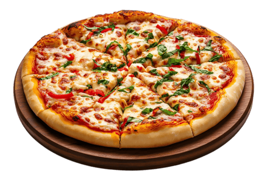

Pizza

Pizza is a flat, baked bread dough base covered with a savory tomato
sauce, melted cheese, and various toppings
No yeast? No problem! This no-yeast pizza dough recipe is not only quicker
than traditional dough, it yields perfect homemade pizza crust every time!
Ingredients
- Flour
- baking powder
- salt
- milk
- olive oil
Steps to follow
- Preheat the oven to 400 degrees F (200 degrees C).
- Bake the crust in the preheated oven for 8 minutes.
-
Top with your favorite toppings and bake until the crust is golden
brown, about 10 to 15 minutes more.